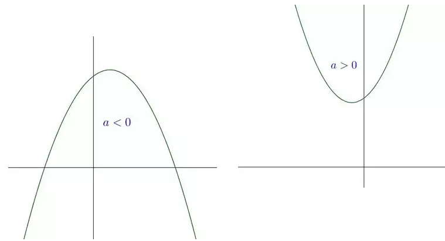
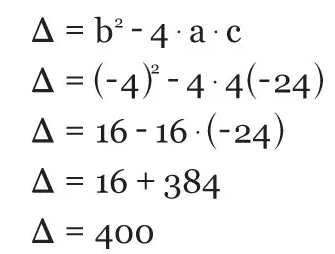
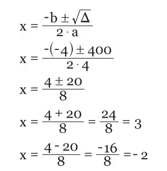

A função quadrática, também chamada de função do segundo grau, é expressa como f(x) = Ax² + Bx + C ou y = Ax² + Bx + C, sendo que os coeficientes "A, B e C" números reais e "A" diferente de 0 (zero).
De modo geral, as funções possuem dois elementos básicos: 1) domínio, que corresponde ao conjunto dos valores possíveis das abscissas (x) e 2) imagem, que é o conjunto de valores das ordenas (y), estabelecida pela aplicação de f(x).
Já o grau da função é determinado de acordo com o maior expoente da variável x. No caso da função quadrática, dois é o mais expoente de x. Mas atenção! Se em uma função não houver nenhum expoente na variável x significa que ela é do primeiro grau.
Observe abaixo outros exemplos de funções quadráticas:
y=x²-4x+3, onde A=1, B=-4 e C=3
y=-x²+2x+4, onde A=-1, B=2 e C=4
y=3x²-4x, onde A=3, B=-4 e C=0
No exemplo y = 3x² – 4x, o coeficiente c é igual a zero isso indica que esta é uma função incompleta, o mesmo vale quando o coeficiente b é igual a zero. Confira outros exemplos:
f(x)=2x²+5, onde A=2, B=0 e C=5
f(x)=3x²,onde A=3,B=0 e C=0
Existe também a função completa, a qual todos os coeficientes (A, B e C) são diferentes de zero. Confira alguns exemplos:
f(x) = 5x² + 2y+ 1, onde A = 5, B = 2 e C = 1
f(x)=x²+4y+11, onde A=1, B=4 e C=11
O gráfico da função quadrática é uma parábola, cuja concavidade é determinada de acordo com o valor de A. Se A > 0, a concavidade da parábola estará voltada para cima e se A > 0, a concavidade da parábola estará voltada para baixo.
a > 0 e a < 0 Foto: Wikipédia
Dois conceitos estão relacionados à concavidade da parábola: as raízes (pontos onde o gráfico intercepta o eixo x) e o vértice (ponto de máximo ou mínimo a função). As raízes podem ser calculadas pela fórmula de Bháskara ou outros métodos. Lembrando que, as funções quadráticas possuem apenas duas raízes.
Em relação ao vértice, na função de primeiro grau é possível traçar o gráfico a partir de dois pontos. Contudo, isso não acontece na função de segundo grau, pois é necessário conhecer mais que dois pontos.
A partir do valor do DELTA = B²-4AC, sabemos que:
Se DELTA > 0, a função possui duas raízes reais distintas e a parábola intercepta o eixo x em dois pontos diferentes;
Se DELTA = 0, a função possui duas raízes reais iguais e a parábola é tangente ao eixo x;
Se DELTA < 0, a função não possui raízes reais e a parábola não intercepta o eixo x;
Dada a função 4x² – 4x – 24 = 0, vamos resolvê-la seguindo algumas etapas:
O primeiro passo é escrever o valor dos coeficientes, sabemos que a = 4, b = – 4 e c = - 24.
O segundo passo consiste em o calcular o valor da discriminante delta, logo:
Cálculo delta.
O terceiro é substituir os valores da discriminante e nos coeficientes na fórmula de Bháskara. Vale ressalta que, a presença do sinal +/- indica que o raiz de delta tem um valor positivo e outro negativo. Assim temos:
Solução da função.
Página Seguinte →